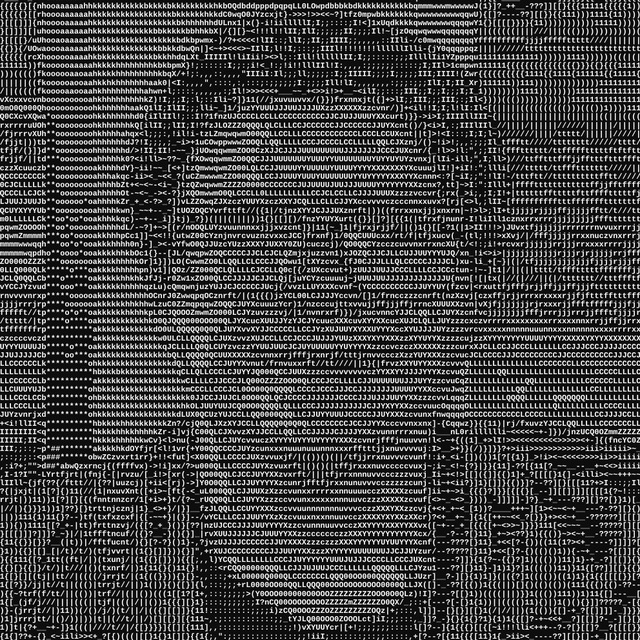

Welcome to my website!
This is created in pure static HTML with CSS to style the page
What is the purpose of this website existence?
I wanted to give possible recruiters and companies a small overview of what I am, what I can and where they can look. This also works as my personal website (Haha! I can write what I want)
Who are you?
Read this page.
In short, TalTech cybersecurity engineering Bachelor's student, web and linux enthusiast, proud Gentoo user, C/C++ lover, Rust admirer, TypeScript enjoyer (guilty pleasure). If that is not enough, you know where to look for more
If you want to get to know me better, then proceed with personal information page.
If you want to contanct me, referer to my contacts list.
